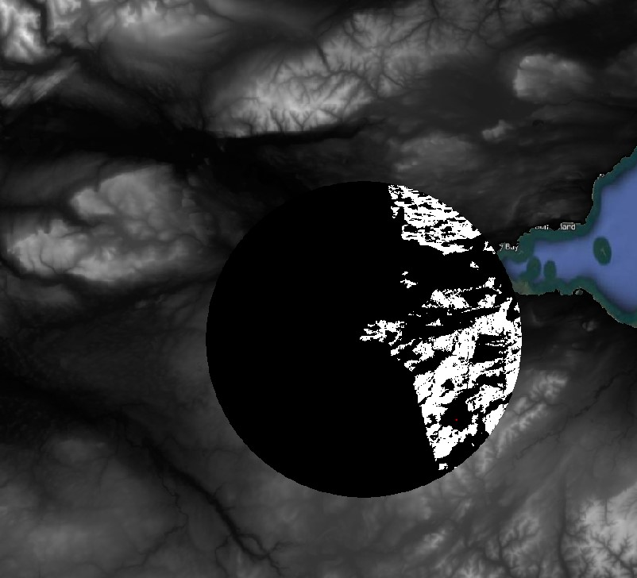

5 Lab 5: Working with raster data
So far, we have been working within the realm of vector data: beautiful topological combinations of vertices and lines to represent the complexity of the Earth’s surface. But there are plenty of situations where vectors are not the best choice; any information that varies gradually and continuously over the surface can be better represented by a raster.
You know rasters well - any digital image is a raster. While vectors connect dots with lines, rasters are grid (i.e. a matrix) of numbers, called pixels. The numeric value of each pixel can be used the indicate a colour (like on digital photos), or can actually represent a physical quantity, such as temperature or elevation.
Raster files can contain multiple ‘images’ within them, which call channels or bands. Digital photos for example, actually contain three bands: one specifying the amount of red colour per pixel, one for the green colour, and one for the blue colour. When you look at a photo you are seeing a color composition mixing the amounts of the three primary colours according to the information help by each pixel.

For GIS data, multiple raster bands can be thought as vector attributes - each band will hold the values of a specific variable (i.e. one band for temperature, and one for humidity). In fact, it may help to frame rasters in terms of their vector equivalents:
| Vector | Raster | |
|---|---|---|
| Data variables | Vector Attributes | Raster Bands |
| Data values | Attribute values | Pixel values |
| Select ranges of data values | Select by expression |
Raster calculator and/or Mask |
| Calculate new variables | Field Calculator |
Raster Calculator |
| Calculate feature areas | Field Calculator ($area) |
Raster layer unique values |
| Select by spatial location | Select By Location (Vec > Vec) |
Extract Raster Values (Points > Raster) |
| Zonal Statistics (Polygons > Raster) | ||
| Zonal Statistics (Raster > Raster) |
We will cover most of the above this week, and then cover how to extract values from raster based on other layers on Week 6. For today, we will learn how to inspect and style raster data, and also how to do some mathematical operations among raster layers using the raster equivalent of the Field Calculator - the Raster calculator.
5.1 Before you start!
- Go through the Week 3 preparatory session on Canvas, and watch the seminar recording if you have missed it.
5.2 Guided Exercise 1 - Opening and inspecting raster data
- For this exercise we will look at three different raster layers. The data has been pre-packaged and can be downloaded here. It includes the following datasets:
UK SRTM: This is a single-band raster containing data from the [Shuttle Radar Topography Mission (SRTM)] (https://en.wikipedia.org/wiki/Shuttle_Radar_Topography_Mission), a global dataset of surface elevation. The data can be obtained from a variety of sources online.
UK Bioclim: The BIOCLIM suite of climate data has been developed to support biodiversity studies and species distribution modelling. It is a single multiband raster file. Read this page for a description of which variable each band represents.
CORINE land cover: CORINE is a EU-wide land cover map that is produced by the Copernicus Space Program. The pixel values are numerical codes that specify the different land cover classes. A description of each land cover number is given here.
UK administrative boundaries from the GADM website, in geopackage vector file format.
Download the required data and organise it as you have learned. Create a new QGIS project and add the
UK_SRTM.tif,UK_Bioclim.tifandCLC2018_CLC2018_V2018_20_UKclip.tifraster files to your project. All files are in GeoTIFF’ format, which is the most common and standard spatial raster file format.For each of the raster layers, right-click on the layer name and go to
Properties > Information, then:
What is the data model of these files?
What is the file format of these files?
What are the data types of each raster file? Why is that important?
What are the CRSs of each dataset you have?
What are the dimensions (rows, columns) of each raster dataset?
How many bands does each raster dataset have?
What are the pixel sizes (spatial resolution) of each raster dataset?
5.3 Guided Exercise 2 - Reprojecting raster data
As we learned in week 1, the UK looks “squished” because the data is projected using only the WGS-84 datum and geographic coordinates (EPSG:4236). Although data in geographic coordinates is often referred to as “unprojected,” this is not actually true (you are looking at it on a flat screen, right?). For these “unprojected” datasets, what most GIS software do is to simply use a linear function to convert latitudes and longitudes in degrees to x and y values on your screen. This projection can be referred to as Plate Carrée or Equirectangular projection, which has a heavy amount of distortion towards the poles:

To reproject raster data, go to
Raster > Projections > Warp (Reproject...). Select your SRTM layer as the Input Layer, and the EPSG:27700 - OSGB 1936 / British National Gridas theTarget CRS. (If you don’t see it as an option, click on the small button to the right to bring up the CRS selection window). Set theOutput file resolution...to90(this will be in meters, as meters are the units of the BNG projection). Leave everything else as default. Then click on the...button to pick an appropriate folder location. Name uour fileUK_SRTM_BG.tif.Runthe algorithm and thenClosewhen finished.Repeat the process for the Bioclim layer (use a cell size of 1000m) and the CORINE land cover map (cell size of 100m). These cell sizes are the meter equivalent of the degree pixel sizes the data currently has. Make sure you add the
_BGsuffix to the new file names to keep track of what has changed from one file to the other.If it seems nothing has really changed, remember that QGIS does reprojections “on the fly” to make sure data on the screen are all aligned to the project CRS. So as you learned in Week 1, change the project CRS to EPSG:27700 as well. Now everything should look good.
Remove the original layers from the project and keep only the reprojected ones, then save your project.
5.4 Guided Exercise 3 - Masking rasters using vectors
We often want to remove portions (specific cells) of a raster, a process called masking. For example, some of our datasets include the Republic of Ireland and bits of mainland Europe, and some datasets include the Shetland Islands, while others don’t. Let use the UK boundaries from the GADM dataset to mask our data to the Island of Great Britain (Scotland, England and Wales) only.
- First add the GADm data (
gadm36_GBR.gpkg) to your project. This geopackage holds multiple layers for the different levels of admin boundaries. You can just add the level 0 layer, which gets the UK as a whole.
Why did you get a warning window when you added the layer to the project?
As we learned on Week 1, trying to do clipping (and masking) operations between layers with mismatched CRSs gives us wrong results. So before you do anything, reproject the UK boundaries layer to EPSG 27700. You also need to extract the main British Island from the rest of the dataset. Turns out there is a quick way to do both at once, but first we need to deal with a little issue with the vector layer:
- Open the Attribute Table of the UK boundaries layer. How many features does it have?
This is what is called a multipart polygon - a set of disjoint polygons all treated as a single feature. Before we can use the layer, we need to split the individual polygons apart to be able to select the main island only:
Go to
Vector > Geometry Tools > Multipart to Singleparts, and select the GADM layer. You can leave it as a temporary layer since we will only export one polygon for it in the next step. A new temp layer calledSingle partswill be created. Inspect its Attribute Table.Now use the feature selection tool (
 ) to select Great Britain only, and then right-click on the Single Part layer name and choose
) to select Great Britain only, and then right-click on the Single Part layer name and choose Export > Save selected features as.... Pick a folder location and name the fileGB_Island.shp. Before you click on OK, however, change theCRSdrop-down menu to EPSG:27000. That is it, QGIS will now reproject the layer before saving it! ClickOKto save, and then remove the original GADM and the temp layer from your project to keep things tidy. Save your project.Double check what is the CRS of the new
GB_islandlayer you have created.You are now ready to mask the raster data. Go to
Raster > Extraction > Clip Raster by Mask Layer.... AsInput layer, select the SRTM layer, and asMask layer, select the GB island layer. Then on the optionAssign a specific nodata value to output bands, enter the number-32768. Make sure you include the minus sign! Leave the other options as default, but do check both theMatch the extent of the clipped raster to the extent of the mask layerandKeep resolution of input rasteroptions. Pick a folder and name your fileUK_SRTM_BG_GBmask.tif. Now we can know at a glance that this is the SRTM data, reprojected to British Grid and masked to Great Britain.
Why did we pick a value of -999 for ‘nodata’?
Why should we check the
Match the extent...andKeep Resolution..boxes?
Use the
Identify Featurestool ( ) to click on blank area of the masked SRTM layer (near the shore). Make sure you have the SRTM layer selected on the Layers panel before you click the tool. What pixel values do you get? -32768 or ‘nodata’?
) to click on blank area of the masked SRTM layer (near the shore). Make sure you have the SRTM layer selected on the Layers panel before you click the tool. What pixel values do you get? -32768 or ‘nodata’?Now go to the
Properties > Transparencytab of the SRTM raster layer, and uncheck theNo data value -999box. Look at your raster again, and probe the same areas with theIdentify Featurestool. Can you see now how the actual raster is still a rectangle, with the pixels outside the mask set to -32768? Before you proceed, go back and check theNo data -999box again.Now repeat the masking for the CORINE and BIOCLIM layers. You can use the same nodata number for the CORINE and BIOCLIM layers. the CORINE layer actually already has nodata defined as
-32768so we just keep it. And for Bioclim, it is an unlikely value for any of the climatic variables, and because the climate data is a floating point number (decimal), it is almost impossible that a perfect value of -32768.000000 would exist in the data naturally.Remove the non-masked raster datasets from your project and save it.
Now zoom in into any place on the coastline, and answer:
Why don’t the edges of each raster dataset line up perfectly?
5.5 Guided Exercise 4 - Styling raster data
Just as with vector data, QGIS offers many options for the symbology of raster data. You will see some similarities between the symbology options for vectors and rasters, but also some differences because of the nature of each data model.
- Turn off all layers except the CORINE land cover, and then go to its
Properties > Symbology. Note that the defaultRender Typefor single-band rasters isSingleband gray. That means pixels are coloured by a shade of grey that is proportional to its numeric value, with higher values being closer to white. Change it toPaletted / Unique Values. Maintain theBand 1selection (there is only one band anyway) andRandom Colorsoptions, and then click onClassify. Apply the result to your raster and visualise it.
How many categories are there on this raster?
What are the pixel values representing?
What would be the vector symbology equivalent of
Paletted / Unique Values?
WHoa, there are a lot of classes, and the random colours selection picked colours that are very similar to one another for some of the classes. Fortunately for us, the data producers of CORINE include a colour map file as part of the metadata. Let us use it!
Back on the
Properties > Symbologywindow, click on the...button to the right ofDelete Alland chooseLoad Color Map from File.... Within the CORINE files you unzipped, find and select the metadata file namedCLC2018_CLC2018_V2018_20_QGIS.txt.Applyand then clickOK. Not only we get the colours selected by the CORIEN mapping team, but also all the proper class names! That was nice!Now let us have a look at the BIOCLIM dataset. First, read the metadata included with the data files (
Bioclim_metadata.txt) to understand what each band of this dataset represents. Then turn on the BIOLCIM layer and turn the remaining layers off.
Why does the BIOCLIM layer appears to be coloured?
- Go to the
Properties > Symbologywindow for the BIOCLIM dataset. Notice the default symbology choice ofMultiband color. Since each band of our data represents a different climatic variable, with continuous numeric values (not categories or classes), we need to pick theSingle band - pseudocoloroption. Choose thebio1band, and for the colour ramp, click on the down-arrow button to the right of the colour palette button, and select themagmacolour ramp. Classify the existing values and thenApplyand clickOK. How does the layer look like now?
What would be the vector symbology equivalent of
Single band - pseudocolor?What climatic variable is “bio01” representing?
What units are the minimum and maximum values shown on the colour scale?
Why such a strange choice for the units?
- Explore some of the other climatic variables contained in the BIOCLIM dataset, using different colour ramps.
Finally, let’s work on the symbology for the SRTM data. For that, we will take advantage of some nice scientific colour palettes that are built-in on QGIS. We will talk aboout what makes these palettes special on Week 4, but let us just use them now.
On the
Properties > Symbologywindow of the SRTM layer, choose theSingleband Pseudocoloroption, and then on th downarrow button besides theColor Rampoption, select Create New Color Ramp. On the small options window that comes up, select Catalog:cpt-city.Once the catalogue window opens, go to the
Topographylist and select thecd-apalette. Then manually enterMinandMaxvalues, using0and900respectively.Applyand see how it changes. But before clicking onOK, go to theTransparencytab and drag the slider at the top to around60%. That will let other layers under it to show through and blend with the colours.Right-click on the SRTM layer name and select
Duplicate layer. This option creates a ‘virtual’ copy of the layer - it will still point to the same file on disk, but you are able to select a different symbology for it.
(@)Now, on the Properties > Symbology of the copied layer, change the render type to Hillshade. Leave everything as default, then Apply and close the window. Make sure both the coloured and the hillshade SRTM layers are turned on on the Layer Panel, and that the hillshade layer is immediately under the coloured SRTM layer. Zoom in and turn each layer on and off in turn to understand how this neat ‘3-D’ visual effect works.
What does the hillshade render style does?
5.6 Guided Exercise 5 - Terrain Calculations
One of the most common raster datasets used in GIS are Digital Elevation Models or DEMS. The structure of raster data is particularly well suited to represent terrain, in its continuous and highly variable nature. Moreover, terrain and elevation data is often a key variable in GIS analysis, as it directly influences most biological, geological and anthropic processes.
For this reason, a few specific terrain analysis tools that are always included in GIS software, and used often. These are the methods to calculate slopes(a.k.a grades, gradients), aspects and viewsheds, using DEMs as the base data.
5.6.1 Plugins
In this exercise, you will also learn about one of the most powerful aspects of QGIS: plugins. As you may know, QGIS is a free and open-source software, meaning anyone can contribute with the code. QGIS also makes it easy for it’s functionality to be extended via plugins, separate little ‘apps’ that add new tools and capabilities to the main QGIS app. For this exercise, we will install and use two official QGIS plugins, the QuickMapServices and Visibility Analysis.
- Head to the menu
Plugins > Manage and Install Plugins. You will se a window like the one below. Then select theNot Installedtab, and then on the search bar search forQuickMapServices. Select it on the left panel, and then click onInstall Plugin. Then repeat this process to find and install theVisibility Analysisplugin.
- The
QuickMapServicesplugin will add a new menu entry:Web > QuickMapServices. Once yo8u click on it, you will see a list of web map services - but there is more. Go toWeb > QuickMapServices > Settings, and then click on theMore servicestab. Then read the warning and click onGet contributed pack, and once you get a confirmation message, click onSaveand exit the window.

Now go back to
Web > QuickMapServices > Settings, and you will see a list of providers. For example, go to theWeb > QuickMapServices > Googleoption and add theGoogle Hybriddataset directly as layer in your project! These layers will require you to be connected to Internet to work, and they won;t give you many symbology options, but they are very handy to help in navigation when working on a project.Take some time to explore the layers available in this plugin.
5.6.2 Masking by area
Earlier today you have learned how to use a vector polygon to mask a raster layer. But sometimes we just want to ‘freeform’ cut a piece of a raster, without the need to be too precise. In that case, we can use the Clip Raster by Extent function.
- Make sure you
Google Hybridweb layer is visible, and navigate until you frame the ‘Stirling-Glasgow-Edinburgh triangle’ in your canvas, like the image below:
(@) Then go to Raster > Extract > Clip Raster by Extent.... Pick the SRTM layer as Input layer, and then for Clipping Extent, click on the small button to the right with a small arrow figure. That will set the cut area to be exactly what you are viewing on the canvas. But there are other options. If you click on the small down-arrow button to the right, you can use the extent (bounding box) of another layer, as well some more advanced options. You can also click on Draw on map canvas to be allowed to drag a rectangle over your map canvas that sets the extent of the cut.
- Mask the SRTM layer to the region including Stirling, Glasgow and Edinburgh, either by setting you map canvas zoom and using it as extent, or by clicking and dragging to set the extent. Then pick a proper folder and save it as
UK_SRTM_BG_centralscotland.tif. You should end up with something like this (but your extent will likely vary):
5.6.3 Calculating slope and aspect
We can now use our Central Scotland subset to demonstrate how to calculate slope and aspect.
- Go to
Raster > Analysis > Slope..., and pick the Central Scotland DEM you created asInput Layer. Leave everything else as default and then pick a proper folder to save the new file asUK_SRTM_BG_centralscot_slope.tif. ThenRunandClose. You will get a new raster layer, where the pixel values indicate the steepness of each pixel, in degrees. Steep slopes will appear as light grey/white, and flat areas will appear dark:
Now go to
Raster > Analysis > Aspect..., and again pick the Central Scotland DEM you created asInput Layer. Leave everything else as default and pick a folder to save the new file asUK_SRTM_BG_centralscot_aspect.tif.RunandClose. This layer will now tell you the cardinal direction, in degrees (North = 0/360),, that each slope is facing.Use the
Indentify Features...tool to explore some of the aspect and slope values you have calculated.
5.6.4 Viewshed analysis
Finally, let us calculate a ‘viewshed’ - raster indicating which points in the Earth surface are visible from a given point, considering the topography. Viewshed analysis is often used for landscape planning - for example, determining from where a wind power turbine may be visible or not.
The Visibility Analysis plugin adds some option to the Processing panel of QGIS. To see it, click on the Processing Toolbox button on the main QGIS toolbar ( ), and the panel will open to the right. This panel houses many, many more GIS functions beyond those available on the
), and the panel will open to the right. This panel houses many, many more GIS functions beyond those available on the Vector and Raster menus, and we will use it often during the last weeks of the module.
Load the
observation_point,shpfile you have downloaded as part of the lab data.Open the
Visibility Analysisheading on theProcessing Toolbox, and then double click onCreate Viewpoints. A new window will open. On this window, you need to pick theObserver Location, which will be the Observation point layer, and then the DEM, which will be the Central Scotland SRTM (make sure you don’t pick the slope or aspect layers by mistake!).There are many options that you don’t need to worry about for now, but three warrant some explanation:
Radius of Analysisspecifies how far you want to calculate the viewshed - it is an expensive computation so it may make sense to limit it. Let’s use 20,000 meters for our analysis. Then pat attention toObserver HeightandTarget Height. They determine what is the height of the observation being made (above the elevation of the observation point), and also what would be the height of the target. So again, if you are wondering if a wind power turbine would be visible from that location, you should add the height of the turbine to theTarget Heightfield. You can leave these options at 1.6m and zero, respectively. Then pick a folder and save the viewpoint asviewpoint.shp, andRunthe tool.Now go back to the
Processing Toolboxand double click onViewshed. Pick theViewpointlayer asObserver Location, and the Central Scotland DEM asDigital Elevation Model. Leave everything else as default, and pick a folder to save your viewshed analysis asviewshed.tif(it wil be a raster file).
You should get an output similar to the figure below, where white pixels (value 1) indicate ‘visible’ and black pixels (value 0) indicate “not visible’.
 Congratulations, you reached the end of Lab 5. You should now understand the raster data model and how to mask it and style it. You have also learned some common terrain analysis tools. In the next lab, we will learn about the Raster Calculator, which fulfils the role of both the Field Calculator and Select by Attribute for rasters.